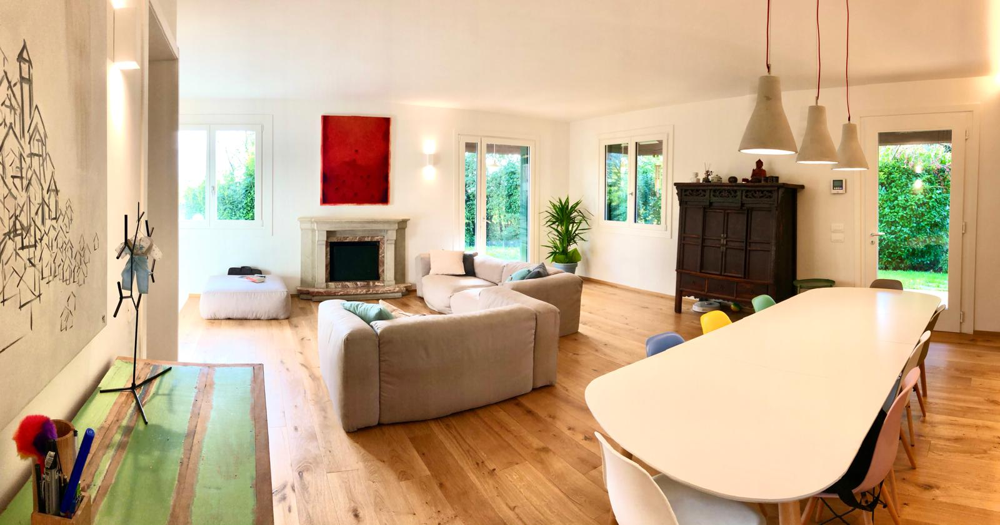

Investire in un immobile ad alto potenziale può finalmente essere semplice. Troviamo l'occasione giusta, coordiniamo ristrutturazione e arredo, seguiamo il cantiere passo dopo passo e gestiamo la rivendita finale. Tu decidi, ci pensiamo noi.
Ogni operazione segue lo stesso percorso, pensato per ridurre al minimo il tempo e le decisioni che restano da prendere a te.
Individuiamo immobili ad alto potenziale di rivalutazione grazie a una rete di agenzie selezionate, che ci segnalano le occasioni migliori prima ancora di metterle sul mercato aperto. Non dev'essere per forza una villa: anche un appartamento comune può valere il triplo una volta ristrutturato, se la posizione è quella giusta.
Prima ancora di acquistare, individuiamo il geometra o l'architetto più adatto al tipo di intervento e mettiamo insieme la squadra di cantiere, che fornisce i preventivi di ristrutturazione comprensivi di ogni costo. Così sai esattamente quanto costerà l'intera operazione prima di impegnare il capitale.
Scelto l'immobile e definito il budget lavori, fai il rogito direttamente a tuo nome: la proprietà è sempre e solo tua, non compriamo né rivendiamo in prima persona. Da qui in poi ci occupiamo di tutta la parte operativa che di solito frena chi vorrebbe investire in immobili.
Selezioniamo personalmente infissi, pavimenti, piastrelle, elettrodomestici, cucine e complementi d'arredo, con la stessa tecnologia e gli stessi brand che vorremmo nella nostra casa: solo marchi di qualità, dal forte contenuto tecnologico. Cerchiamo però il prezzo più conveniente in quel momento, acquistando direttamente dal fornitore o online, a caccia delle promozioni migliori.
Coordiniamo geometri, imprese e fornitori, con sopralluoghi regolari e un rendiconto costante: resti informato in ogni momento, senza dover essere presente in cantiere.
Tramite la stessa rete di agenzie, rimettiamo l'immobile sul mercato e definiamo insieme a te il prezzo di vendita per ottenere il margine migliore: a vendere sei sempre tu, come per l'acquisto. Chiudiamo l'operazione con un rendiconto chiaro di costi, tempi e risultato ottenuto.
Siamo una società che sta al fianco di chi vuole investire in immobili e non ha il tempo, o la voglia, di seguire ogni passaggio. Individuiamo l'occasione, ci interfacciamo con geometri, architetti, imprese e agenzie, che gestiscono i lavori, e coordiniamo il tutto: tu hai un unico referente.
Quel referente sono io, imprenditore con base a Treviso. Guido la mia azienda tecnologica da tredici anni, portandola a operare in decine di città italiane e a superare i 180 milioni di euro di transato complessivo. Prima ancora ho lavorato nell'export e nella gestione commerciale nel settore dell'arredo e del design. Oggi metto la stessa disciplina operativa e la stessa capacità di seguire un progetto dall'inizio alla fine al servizio di chi vuole investire in immobili ad alto potenziale.
Non gestisco un fondo, non raccolgo capitale e non compro né rivendo immobili in prima persona: l'immobile che scegliamo insieme lo acquisti sempre tu, con rogito diretto a tuo nome. Io affianco l'intera operazione con un mandato chiaro, dalla ricerca alla rivendita finale, e vengo remunerato con una percentuale sulle diverse fasi del lavoro, mai dai fornitori o dai negozi con cui collaboro.
Il capitale lo metti tu. Il valore che portiamo noi non si può quantificare, ma si vede in ogni fase del lavoro.
Case che la gente sta lasciando andare tornano a essere case in cui qualcuno vorrebbe davvero vivere.
Agenzie che ci segnalano le occasioni prima del mercato, imprese e professionisti che eseguono i lavori: tu hai un unico referente.
Cerchiamo il prezzo migliore su ogni voce, dai materiali agli arredi, e definiamo con te il prezzo di vendita.
Un preventivo chiaro prima di acquistare e un rendiconto su ogni costo, fino alla rivendita.
Luce, verde e materiali naturali come rovere, resina e microcemento: la casa si apre sul giardino e sul paesaggio che ha intorno.
Ogni operazione prepara la successiva: a rivendita conclusa, il capitale è pronto per la prossima occasione.
Il capitale è tuo. Tutto il valore che si aggiunge è una
Ogni immobile viene analizzato a fondo e riportato allo stato di nuovo. Quando serve, rifacciamo impianti idraulici ed elettrici da zero, e i bagni li rifacciamo sempre per intero, con docce a filo pavimento, piastrelle di grande formato, rubinetteria e sanitari dall'estetica curata. Oltre alle finiture di base, come pavimenti in legno e infissi, inseriamo sempre una cucina di design con elettrodomestici di livello, tra cui AEG, Bosch e Samsung, e comandi Living Now predisposti per la domotica. Per ottenere un margine solido alla rivendita serve offrire la qualità e il comfort più alti possibili in una casa.
Ogni progetto ha una sua storia, dal punto di partenza alle scelte fatte in corso d'opera. Apri una scheda per vedere il percorso completo, con le foto del prima e del dopo.

Da cantiere grezzo a casa pronta, con un design contemporaneo e materiali naturali.
Guarda il progetto →
Da appartamento anni ottanta a spazio luminoso e moderno, dentro una villa storica.
Guarda il progetto →
Cantiere in corso: appartamento con cortile privato in centro, tra foto e render.
Guarda il progetto →
Da villa dallo stile datato a casa luminosa, con rovere e cucina a vista sul giardino.
Guarda il progetto →Lavoriamo negli immobili perché ci appassionano. Ci piace riportare valore dove altri hanno smesso di crederci, e farlo come se la casa fosse nostra.
Ci interessano gli immobili che il mercato guarda con poca attenzione: una barchessa dimenticata, un rustico buio, un appartamento con le finiture ferme a trent'anni fa. Dove altri vedono solo lavori da fare, noi vediamo che cosa può tornare a essere.
Ogni scelta, dal parquet alla luce sopra l'isola della cucina, la facciamo pensando a chi ci abiterà. È l'unico modo di costruire una casa che qualcuno voglia davvero comprare: nessuno sceglie una casa senza anima.
Travi a vista, proporzioni generose, un giardino, una vetrata sul verde: un carattere che oggi non emerge fino in fondo. Mostrato nel modo giusto, interessa a chiunque ami il bello.
Una casa con un'anima si vende meglio, ed è lì che nasce il margine.
Ogni operazione dura 6-8 mesi e il suo esito dipende prima di tutto dal progetto. Il rendimento per chi investe, però, cambia molto in base a come l'operazione viene strutturata.
Il margine nasce dalla distanza tra ciò che un immobile è oggi e ciò che può diventare: un appartamento con giardino in centro, un rustico in campagna, una villa con le finiture ferme da decenni. Si compra al prezzo giusto, si ristruttura partendo da un preventivo chiaro e si rivende. Conta quanto valore si riesce a creare rispetto a ciò che si è pagato.
Con un mutuo sull'acquisto la stessa operazione richiede meno capitale proprio, e il rendimento calcolato su quel capitale può risultare molto diverso da quello di un acquisto interamente pagato in contanti. È una possibilità che l'immobiliare offre in modo naturale, da valutare caso per caso con il tuo consulente: gli interessi sono un costo, e la leva amplifica anche i risultati meno favorevoli.
Chi acquista da privato, per esempio come seconda casa, può accedere ad agevolazioni sull'acquisto e sui lavori di ristrutturazione che incidono in modo importante sul risultato netto. Dipendono dalla situazione personale e dalla normativa del momento: le verifichiamo con te e con il tuo commercialista prima dell'acquisto.
Margine netto medio sul capitale investito, in operazioni di 6-8 mesi, calcolato dopo il compenso di INNvesting e prima delle imposte sul risultato. Leva bancaria e incentivi fiscali non rientrano nel calcolo e, ove possibile, si aggiungono come ulteriore marginalità dell'operazione.
Ogni operazione ha comunque i suoi numeri, e li costruiamo insieme a te.
Dato calcolato su importi IVA esclusa, come media delle operazioni concluse. Non costituisce una promessa di rendimento: i risultati passati non garantiscono quelli futuri. Le informazioni su finanziamenti e fiscalità sono di carattere generale e non costituiscono consulenza.
Gli strumenti finanziari restano la base di un patrimonio ben costruito. Un immobile ad alto potenziale, ben scelto e ben gestito, non li sostituisce: si affianca a loro per diversificare, con un bene concreto e una logica di rendimento diversa.
Persone che vogliono destinare una parte del proprio capitale a immobili selezionati, senza occuparsi personalmente di ricerca, cantiere o vendita.
Strutture che gestiscono patrimoni familiari e cercano un partner operativo affidabile per la componente immobiliare.
Realtà che vogliono offrire ai propri clienti anche l'accesso a operazioni immobiliari, oltre ai tradizionali strumenti finanziari.
Dicci quanto vorresti destinare e che tipo di operazione stai valutando, poi ne parliamo. Rispondiamo personalmente a ogni richiesta.